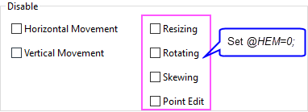

Die Registerkarte Dimensionen (Objekteigenschaften)
Ob-Prop-Dimentions-tab
Einheiten
Legen Sie die Objektposition und -größe in Einheiten fest, ausgewählt in der Auswahlliste Einheiten.
Anfang/Ende
Legen Sie die X- und Y-Position des Anfangs und Endes des Pfeilobjekts mit Hilfe der angegebenen Einheit fest.
Methode
Bei einem Winkelobjekt können Sie zwei Ansätze verwenden, um die Position und Winkelgröße festzulegen.
- 3 Punkte: Verwenden Sie drei Punkte, Anfang, Mitte und Ende, um den Eckpunkt und die Seiten des Winkel zu positionieren.
- Winkel und Betrag: Legen Sie den Anfangswinkel und die Winkelgröße mit Hilfe von Anfang und Winkel fest; legen Sie die Position des Eckpunkts mit den Werten von X und Y fest; legen Sie die Seitenlänge mit Hilfe von Anfang und Ende fest. Diese Methode ist standardmäßig aktiviert.
Seitenverhältnis beibehalten
Aktivieren Sie dieses Kästchen, um nur proportionale Größenbemessung zuzulassen.
Auf ursprüngliches Seitenverhältnis zurücksetzen
Klicken Sie auf die Schaltfläche Auf ursprüngliches Seitenverhältnis zurücksetzen, um die Tabellengröße auf das ursprüngliche Seitenverhältnis zurückzusetzen.
Links/Rechts/Oben/Unten (Rand)
Legen Sie die Größe des Rechtecks mit dem Rand oder der Position der vier Rechteckseiten fest.
Deaktivieren
Die Optionen zum Deaktivieren steuern das Verhalten des Objekts, während es seine Form und Position ändert. Siehe Zeichenobjekte erstellen.
| Horizontale Bewegung |
Aktivieren Sie dieses Kästchen, um eine Verschiebung in horizontaler Richtung zu verhindern. |
| Vertikale Bewegung |
Aktivieren Sie dieses Kästchen, um eine Verschiebung in vertikaler Richtung zu verhindern. |
_Dimentions_tab/Tip_icon.png) |
Wenn Sie das Verändern der Größe, Drehen oder schiefe Anzeigen des Objekts oder das Bearbeiten von Punkten des Objekts deaktivieren möchten, verwenden Sie die Systemvariable @HEM, um die untenstehenden Optionen zu zeigen und diese Verhalten zu steuern.

- Größe ändern: Aktivieren Sie diese Kästchen, um die Änderung der Größe zu verhindern.
- Drehen: Aktivieren Sie diese Kästchen, um die Drehung zu verhindern.
- Schief anzeigen: Aktivieren Sie diese Kästchen, um eine schiefe Anzeige zu verhindern.
- Punkt bearbeiten: Aktivieren Sie dieses Kontrollkästchen, um zu verhindern, dass die Position der einzelnen Objektpunkte bearbeitet wird.
Hinweis: Für Versionen, die älter sind als Origin 2025b, werden diese Bedienelemente standardmäßig gezeigt.
|